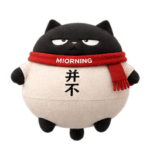

抓到它，收好图标
平时拄着拐杖慢慢走。鼠标靠近会先警觉、加快脚步，再逼近就随机骑电动车或翻滚逃走。快速抓到后点击，仍会吸入图标、鼓成圆球撞顶回弹。

并不努力，优秀收纳。保留整个文件夹。安装时选择其中的 extension 文件夹，里面可以看到 manifest.json。
chrome://extensionsedge://extensions点击“加载已解压的扩展程序”，选择 extension 文件夹。然后打开或刷新一个普通网页。
在浏览器的扩展菜单里，固定“喵咛·收纳猫”，方便唤出黑猫右键菜单。其他插件的工具栏图标可以手动取消固定。
右键黑猫或露出的尾巴：快捷键设置、收纳 / 释放图标、隐藏 / 显示黑猫。打开菜单时黑猫会停下来，两项动作旁显示当前快捷键。
平时拄着拐杖慢慢走。鼠标靠近会先警觉、加快脚步，再逼近就随机骑电动车或翻滚逃走。快速抓到后点击，仍会吸入图标、鼓成圆球撞顶回弹。
吃饱的黑猫也会躲。再次点击，它会把图标一个个吐回原来的位置，再掉落、砸成饼、回弹，朝屏幕做个不服气的手势后接着走。
底下抓住三秒不点，它就藏；上面一圈后藏。
不想追猫的时候
黑猫会通用扫描网页里的小型浮动入口，包括其他插件和网站自己的悬浮按钮；五款现有插件只是优先适配。未自动识别的图标，可以右键黑猫 → “快捷键设置” → 展开“收纳范围与其他设置” → 点击“点选其他悬浮图标”，再到网页里点选那个小按钮；按 Esc 取消。自选规则按网站保存，随时可以从列表移除。跨域 iframe 内部按钮与自绘 canvas 图标不能保证自动识别，可尝试点选可见的小型入口补收。
黑猫整理的是网页里面的悬浮按钮。地址栏旁边的浏览器工具栏图标，需要你手动取消固定。收纳不会卸载或停用其他插件；原来的快捷键、面板功能仍由原插件负责。
浏览器内置页面、扩展商店及部分受保护页面不能放猫。要在本地 HTML 页面使用，请在扩展详情里开启“允许访问文件网址”。
如果误选了网页元素，在右键设置里点“紧急放回全部图标”，再移除那条自选规则。关闭黑猫也会放回图标。
按住尾巴左右拖动，向页面里拉就能拔猫。
刷新或换页会沿用收纳状态、藏尾位置和显示偏好。
勾选图标旁的“显示”，它会立即放回，以后也不再被吞。